G8 reading variants: design proposals (provisional)
Plan §10.4 G8 asks for designs of Scroll mode, the two-page spread, fixed-layout zoom and pan, RTL and vertical writing, the image view, the loading state for large books and “≈” locations. There were none, so these are proposals drawn inside the approved system: the S4 tokens and type, the S3 canvas geometry (the spread uses the engine's own numbers), and the chrome and message designs from Screens 02, 03 and M1. Numbered blue notes explain each choice and are not part of the design; clean copies without notes are next to each image (png/*-clean.png). Click an image for full size.
Approving makes these the G8 design: the clean images become the reference, and the features are built to them (Scroll mode, spread and fixed-layout zoom in Phase 2; the image view in Phase 3). Each item can also be approved or changed on its own.
| Tag | Meaning |
|---|---|
| follows | Taken directly from an approved rule or decision |
| your call | A choice these proposals make that the rules leave open: approve it or name another |
| later phase | Drawn now, built in a later phase |
1 · Two-page spread (L8, B12)

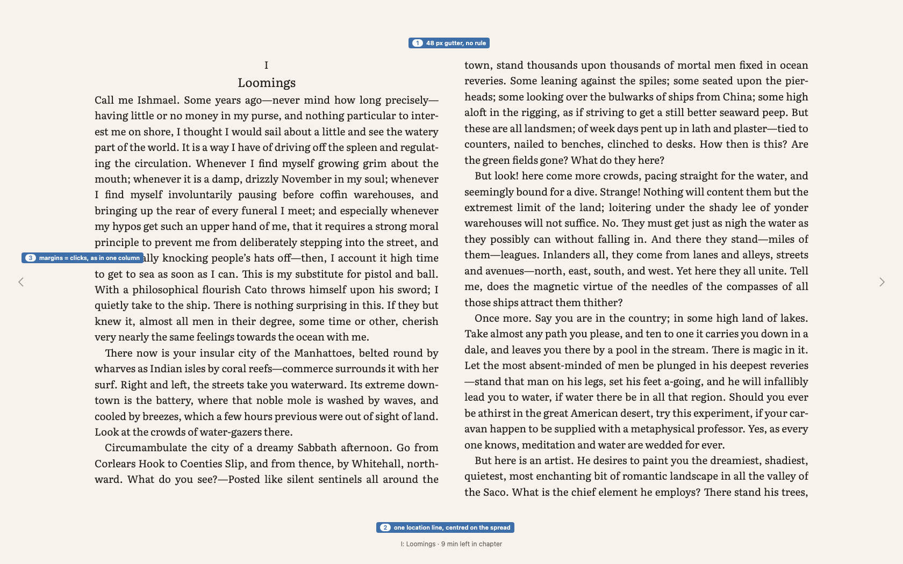

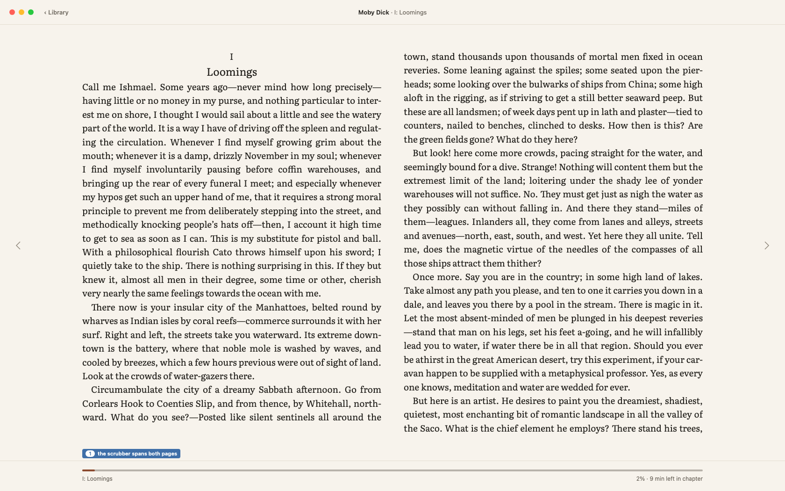
- followsFrom 1480 px of width left after a docked Navigator (B12), in Pages mode only. Two 640 px pages, 28 lines each, exactly as the engine computes them today.
- followsMargins still turn pages; the chevrons sit at the same 33 px from the window edge.
- your callGutter 48 px (twice the minimum margin) with no rule or shadow between the pages: the spread reads as one sheet, like Screen 02.
- your callOne location line, centred under the spread; the scrubber spans both pages.
- your callA new chapter starts on the next page, left or right, never forced to the right page with a blank left. This keeps page turns even.
2 · Scroll mode (B8)

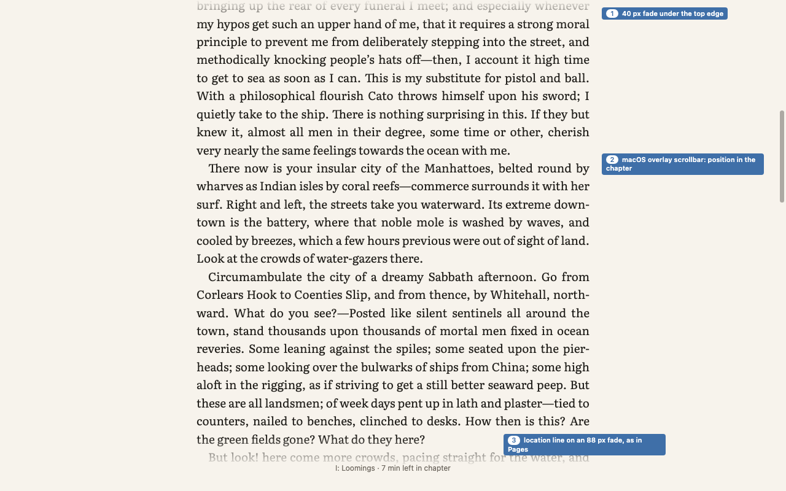

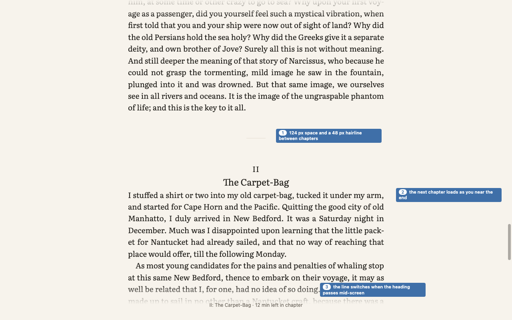
- followsOne continuous scroll per chapter; scrolling on past the end moves into the next chapter (B8). The location line and scrubber show the same book-wide position as in Pages.
- your callText runs under the window edges: a 40 px fade at the top and an 88 px fade at the foot, which carries the location line in the same place as in Pages.
- your callBetween chapters: 124 px of space and a 48 px hairline, then the next chapter’s own heading. The location line switches chapter when the heading passes the middle of the window.
- your callThe macOS overlay scrollbar stays, showing the position in the chapter. It appears only while scrolling, as everywhere on macOS.
- your callInput in Scroll (Proposal 3): wheel and two fingers scroll natively; ↑ ↓ scroll by 3 lines; Space and ⇧Space by a screen minus two lines; the margins do nothing (there are no pages to turn).
3 · Fixed layout: fit and zoom (E2, I17)

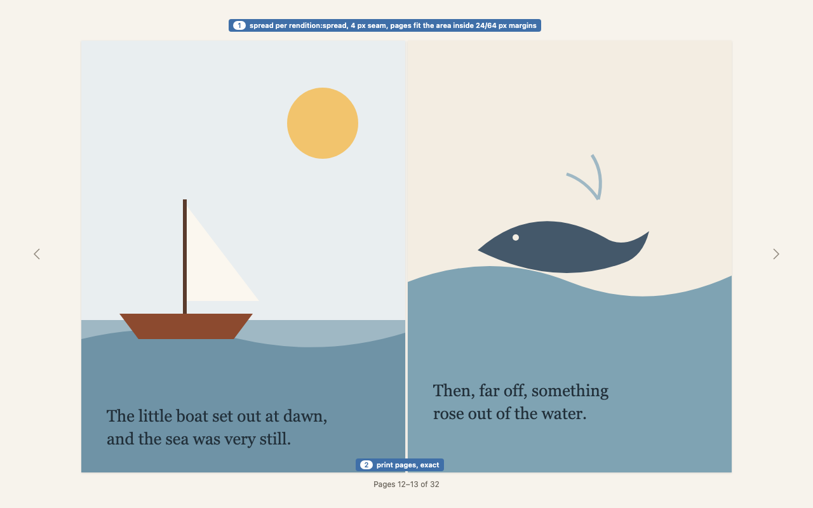

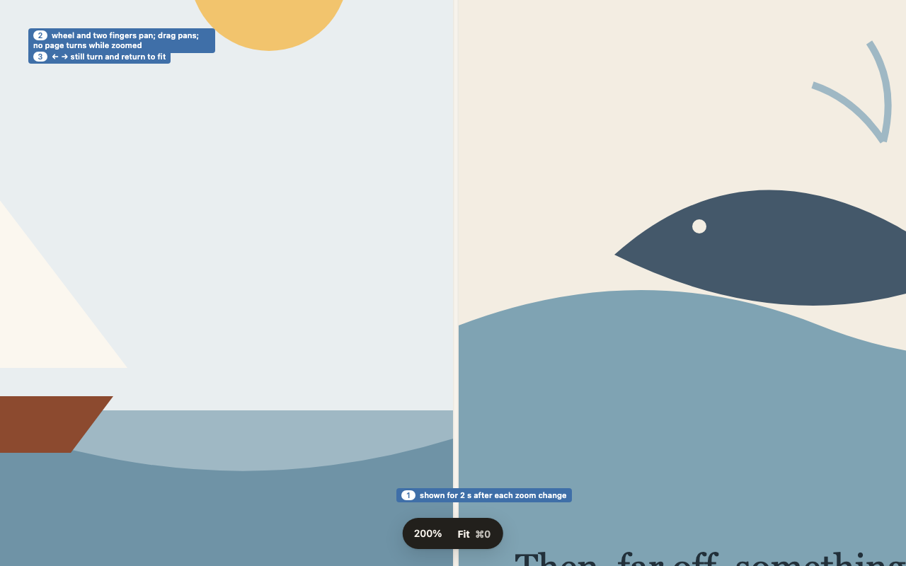
- followsPages scaled to fit, in spreads as the book’s
rendition:spreadasks; zoom by ⌘+ ⌘− and pinch (Proposal 4). - your callThe spread fits inside 24 px side and 64 px top and bottom margins, with a 4 px seam and a faint shadow so white pages separate from the Paper ground.
- your callThe location line shows print pages exactly (“Pages 12–13 of 32”): fixed-layout pages are real pages, so there is no “≈” here.
- your callWhen zoomed: the wheel, two fingers and dragging pan; ← → and the margins still turn the page and return to fit; ⌘0 returns to fit. The zoom level shows for 2 s in the message style.
- later phasePinch needs the native gesture bridge (Spike B has the scroll side of it).
4 · Right-to-left books (I15, I16)

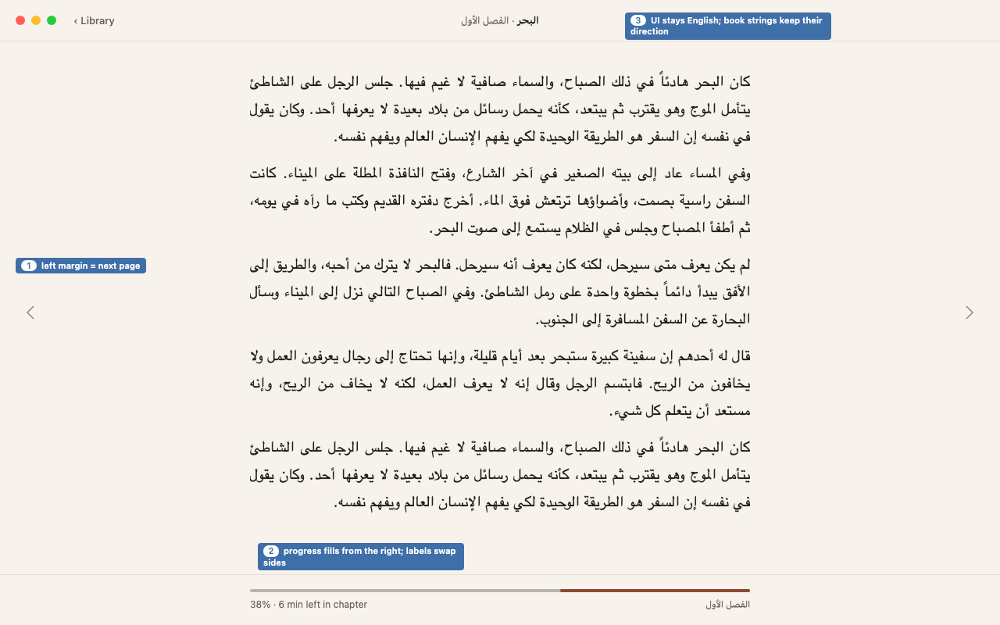
- followsThe book’s page progression decides direction: the left margin and ← go forward; the UI stays in English (Proposal 4).
- your callThe progress bar fills from the right, and its two labels swap sides so the chapter sits where reading starts. Book strings (title, chapter) keep their own direction inside the English UI.
5 · Vertical writing (I16)

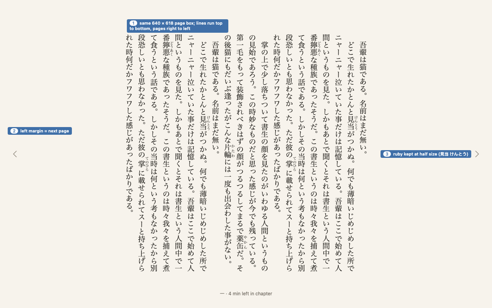
- followsLines run top to bottom and pages right to left; ruby is kept; Pages is the default (Proposal 1 §2).
- your callThe same 640 × 618 page box as horizontal text, so the canvas and chrome do not move. The line pitch is snapped so the page holds whole lines (here 20 lines of 32 px), the vertical version of “never a half line”.
- your callThe line length is the page height (about 32 characters at 19 px), with no separate measure setting.
6 · Image view (N11, Phase 3)

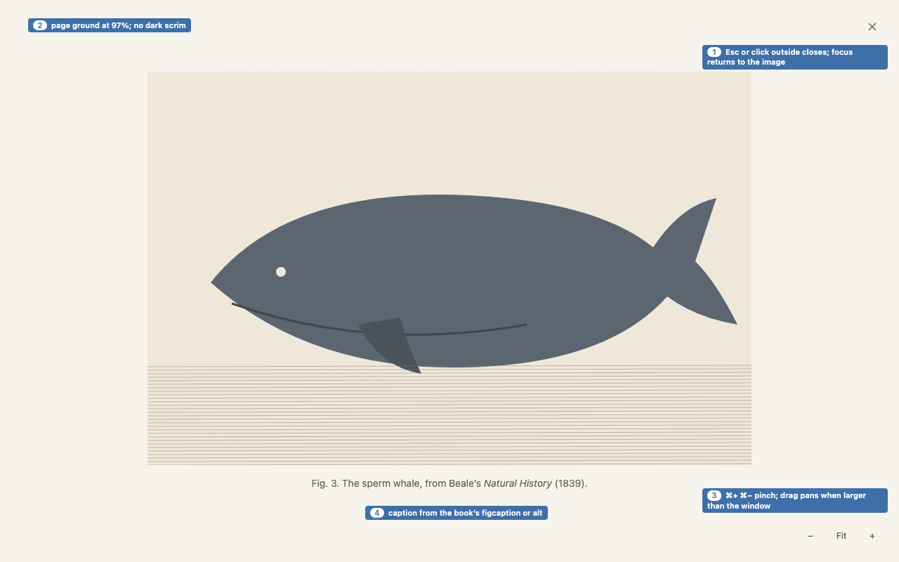

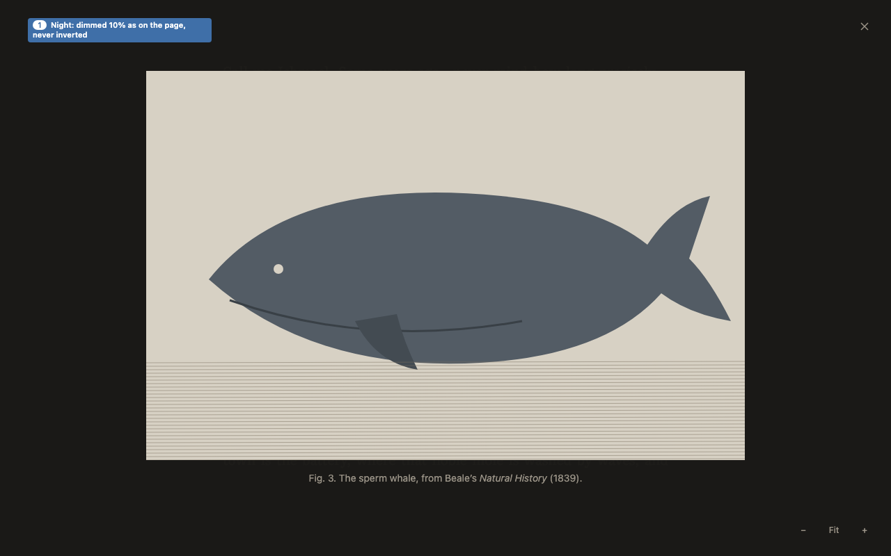
- followsClick or double-tap an image to open it; images at Night are dimmed about 10% and never inverted (Proposal 1, 4).
- your callThe page ground at 97% covers the book, with no dark scrim, so the view stays in the reading theme. The image fits inside 48 px, and its caption comes from the book’s figcaption or alt text.
- your callClose (×) top right; zoom − Fit + bottom right, plus ⌘+ ⌘− and pinch; drag pans once the image is larger than the window. Esc or a click outside closes it, and focus returns to the image in the text.
- later phaseBuilt in Phase 3, as the plan schedules.
7 · Opening a large book

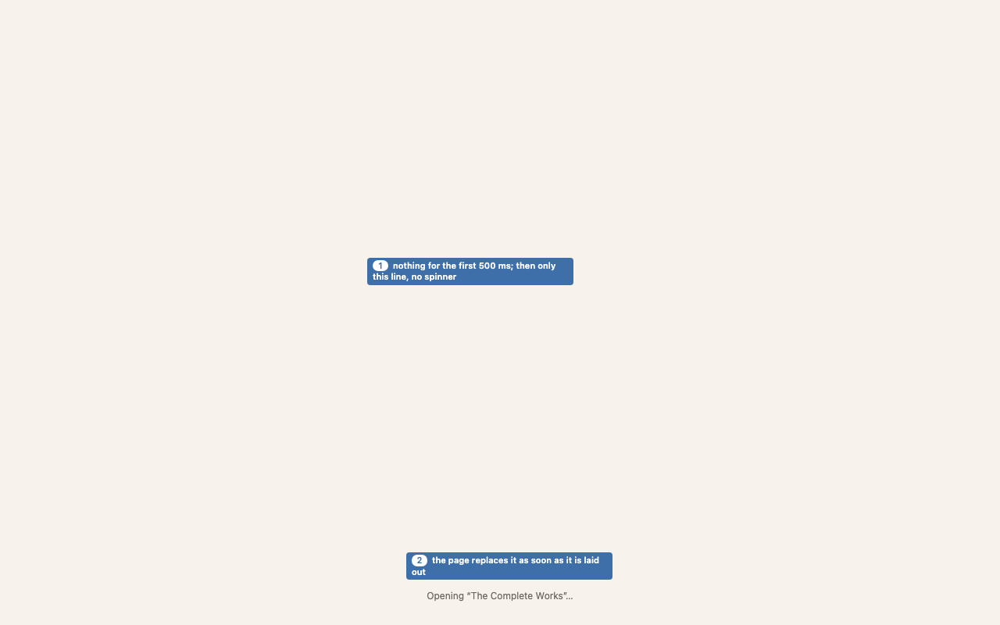
- followsThe open budget is 500 ms (§6.4). With chunked long chapters (L16) the reference books open in 90–340 ms, so this state is rare.
- your callNothing for the first 500 ms (no flash). After that, only one line where the location line sits: “Opening “Title”…”. No spinner and no progress bar. The first page replaces it as soon as it is laid out.
8 · “≈” locations (B1, L16)

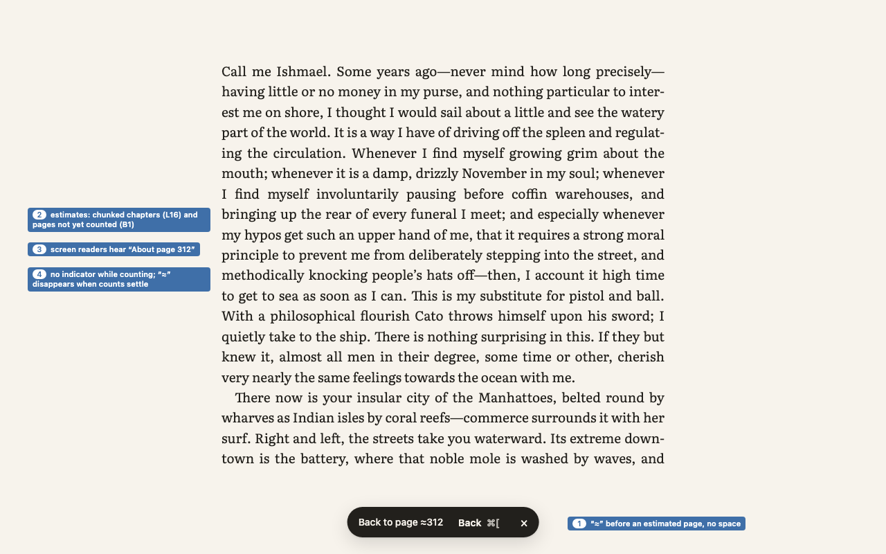
- followsEstimated page numbers carry “≈” until pagination settles (B1). This already works in chunked long chapters: “Back to page ≈312”, and VoiceOver says “About page 312”.
- your call“≈” goes directly before the number with no space, in the same weight. Nothing else signals counting in progress; the mark simply goes away when counts settle.
- your callThe same form everywhere a page number appears: the Back chip, Go to (Phase 3) and page announcements. Percentages never carry “≈”, because they are always exact to the character.
Your call
- your callApprove all eight as the G8 design, or name the items (and choices) to change.